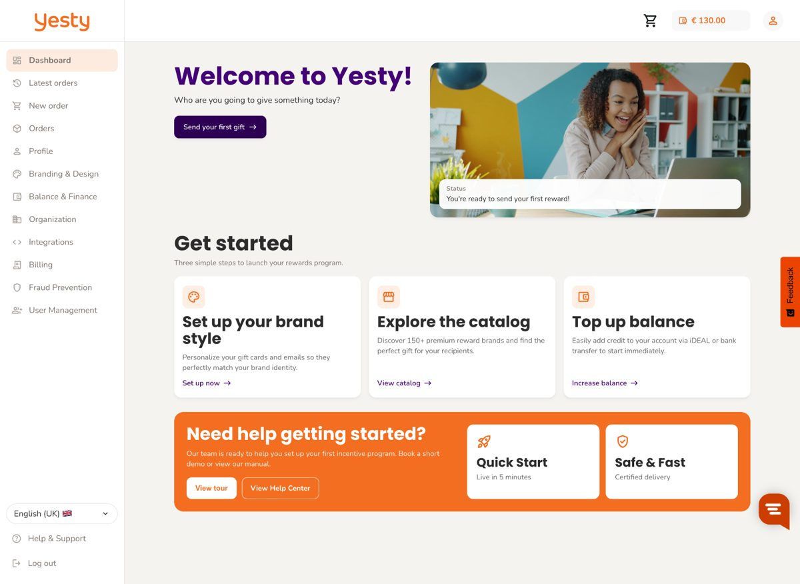
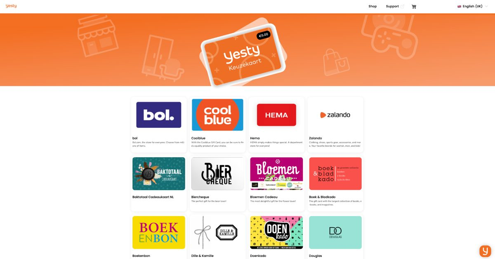
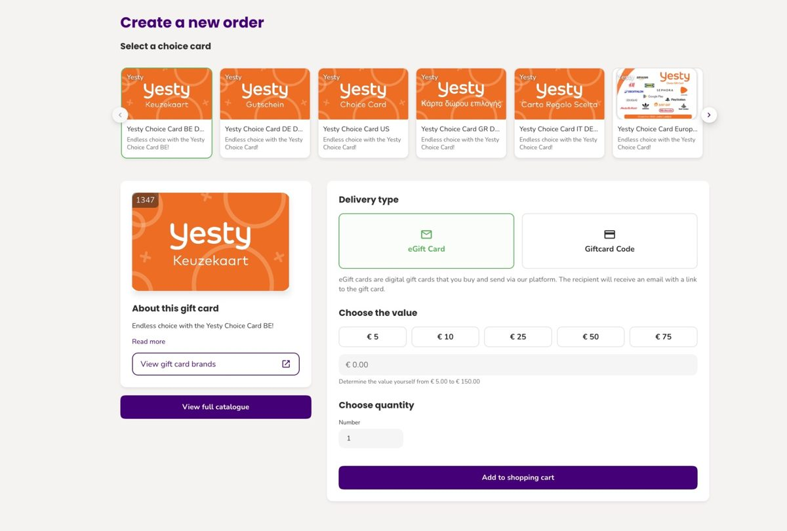

01
Van Swapfiets, niet van een platform
Logo, kleuren en de welkomsttekst zijn van jullie. De ontvanger ziet Swapfiets, in zijn eigen taal.
Ik las hoe jullie naar engagement kijken en ging daarna verder lezen dan ik van plan was. Wat me opviel staat hieronder, met de bron erbij.
Ik las een interview over hoe Swapfiets engagement meet. Daarna ben ik verder gaan lezen: over jullie mensen, waar ze werken, en wie jullie nu zoeken.
Drie dingen, en ze wijzen dezelfde kant op.
Op basis hiervan kwam ik tot één conclusie.
Klik het dossier open.
Je meet vier keer per jaar wat mensen van Swapfiets vinden. Daartegenover staat meestal één moment per jaar waarop iemand iets in handen krijgt.
Adressen verzamelen, bonnen regelen, pakketten inpakken of vouchers uitprinten. Bij acht landen en een team dat in ploegen werkt, is dat geen middagje meer. En de WKR maakt het niet makkelijker: de vrije ruimte hangt aan de loonsom en verschilt per entiteit, dus iemand moet precies bijhouden waar de grens ligt.
Een cijfer dat je vier keer per jaar ophaalt, verandert niet van één cadeau in december.
Waardering op het moment dat er iets te vieren valt, in Swapfiets-huisstijl, in acht landen tegelijk, zonder een dag administratie voor jullie team.

Logo, kleuren en de welkomsttekst zijn van jullie. De ontvanger ziet Swapfiets, in zijn eigen taal.

Ruim 150 merken. Wat niet wordt ingewisseld, komt automatisch terug op je saldo.

Per mail of sms, direct nadat de aanleiding er is. Een monteur die een lastige week goed doorkwam, hoort dat dezelfde dag.
Uit de rij Vertrouwd door op yesty.io. 94% van de beloningen wordt ingewisseld.
Ik ben Nick, oprichter van Yesty. Het geven zelf is leuk. Alles eromheen kost iemand een week: adressen, bonnen, pakketten, en een spreadsheet voor de WKR.
Daarom bouwden we Yesty. Er zit geen maandbedrag aan vast en er is geen demo nodig. Je kunt vandaag één beloning versturen om te zien hoe dat er voor een van je mensen uitziet, en daarna pas besluiten of dit iets voor Swapfiets is.
Nick Stals
Je hebt er één e-mailadres voor nodig, van iemand uit je eigen team. Verstuur een beloning en kijk wat die persoon ziet.
Liever één keer samen doorlopen, met de acht landen erbij? Mail naar contact@yesty.io